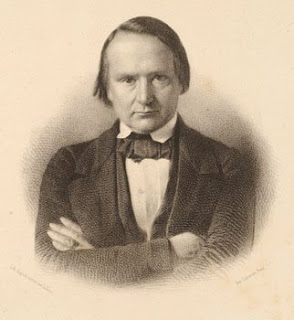
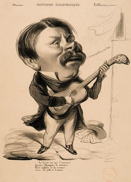

Gastibelza
Poème de Victor Hugo (1837, publié en 1840)
Georges Brassens (1955)
|
|

Victor Hugo en 1837
NOTES
|
(1) L'inspirateur Comme pour la plupart des chansons de Brassens sur ce site, cette traduction chantable s'inspire de la traduction en prose publiée sur son blog par David Yendley (http://dbarf.blogspot.fr/2012/05/alphabetical-list-of-my-brassens-songs.html). (2) Un texte élagué Dans la chanson de Brassens les strophes 3, 7, 10 et 11 sont sautées. Ce choix semble tout à fait judicieux: Pour prolonger le défi qu'il se lance à lui même, l'auteur du texte, Victor Hugo, recherche le maximum de rimes en "agne" et en "ou" répondant au refrain quasi-immuable: "Le vent qui vient à travers la montagne, me rendra fou". Les 7 strophes qui subsistent chez Brassens décrivent la fascination de l'"homme à la carabine" pour la beauté de Doña Sabine et sa crainte obsessionnelle du vent qui rend fou, en excluant les épisodes annexes (l'aumône au mendiant, les deux baigneuses, la fuite vers le nord, la dague au clou) qui, s'ils témoignent de la virtuosité du poète, en ajoutant de nouvelles rimes obstinées (sou, compagne, Cerdagne, clou), nuisent à l'intensité dramatique du récit. L'interrompre et le faire culminer au moment où le malheureux "fou de Tolède" découvre la vénalité de l'angélique beauté qu'il vénère est, de la part de Brassens, une décision particulièrement heureuse. On notera que le premier musicien à avoir harmonisé ce poème, Hyppolite Monpou, n'avait retenu que 4 strophes (1, 4, 5 et 9) qui se trouvent toutes chez Brassens. Le désir de "placer" le mot "Allemagne" (strophe 8) conduit Hugo à un raccourci saisissant: l'empire romain qui fait suite à l'emprise de César sur la République se scinda en deux entités. L'empire de l'Ouest fut ressuscité par Charlemagne (convoqué strophe 4!) pour devenir plus tard le Saint Empire Romain "Germanique"... (3) Rencontre à Biarritz Cette pièce, intitulée "Guitare", est tirée des "Rayons et des Ombres", chapitre XXII, un recueil de poèmes écrits après 1830 et que Victor Hugo publie en 1840. Dans "En voyage, tome II, (au chapitre "Alpes et Pyrénées"), qui paraîtra après sa mort en 1890 (ses notes de voyage ne seront pas exploitées comme elles auraient pu l'être du fait de la mort de sa fille Léopoldine survenue en août 1843), Hugo raconte comment il rencontra à Biarritz, en juillet 1843, une fille de village qui se baignait en jupon et en chemise et qui lui chanta les deux premières strophes de son poème, un épisode qui semble avoir eu des précédents dans la vie de Hugo, puisqu'on en trouve l'équivalent dans la strophe 7 de ce chant composé au plus tard en 1837. Elle lui demande "Señor Estranjero, conoce Usted cette chanson?" Il répond modestement "Je crois que oui" et il se compare alors à "Ulysse écoutant la sirène", bien que l'épisode qu'il relate s'apparente plus à la rencontre d'Ulysse et de Nausicaa, dans l'Odyssée d'Homère. (4) Les trois mélodies Si cette jeune demoiselle connaissait ce texte, c'est qu'il avait été, 3 ans avant sa publication dans "Rayons et Ombres", . Cette mélodie était si connue que, sous le titre d'une de ses chansons composée vers 1845, le chansonnier breton Prosper Proux (1811-1875) indiquait "sur l'air de Gastibelza". Le morceau de Liszt exprime de manière hallucinante la folie de l'homme d'arme provoquée par la perte de sa vénale bienaimée et par la "tramontane", ce vent du nord venu "qui vient à-travers la montagne", à qui la tradition prête cette vertu débilitante : "Imitation daccords légers de guitare, rythmes de boléro, accords roulés, hurlement du vent, tous sont enveloppés dans le langage harmonique des plus haut en couleur de Liszt et ses textures nouvelles..." (selon le site "Hypérion"). (5) Hugo le linguiste Contrairement à l'interprétation de M. David Yendley, Victor Hugo, dans le texte sibyllin qu'il cite, ne dit pas précisément qu'il a repris le thème d'un chant populaire espagnol. Un site en castillan qualifie "El de la carabina" de "condensé de couleur locale" imaginé par cet auteur... Ce qui est indéniable, c'est que Hugo s'intéressait à la langue basque, d'où le nom du héros "Gaste-Belza", le "jeune homme noir" dans cet idiome. On sait grâce une lettre à son fils Charles datée du 31 juillet 1843 qu'il avait fait l'aquisition d'une grammaire à Saint-Sébastien, sans doute plus pour satisfaire sa curiosité que pour apprendre cette langue redoutable. Il écrira à propos du basque: « La langue basque est une patrie, jai presque dit une religion. Dites un mot basque à un montagnard dans la montagne ; avant ce mot, vous étiez à peine un homme pour lui ; ce mot prononcé, vous voilà son frère». Son intérêt pour la langue basque le conduisit à traduire une strophe de l'inauthentique "chant de Roncevaux" des Basques, Le chant d'Altabiscar (col. 2) (6) Hugo l'hispanisant Mais c'est surtout les mots espagnols que le fils du général Hugo - qui avait pratiqué cette langue dans son enfance- manie avec un plaisir non dissimulé (Doña Sabine, Tolède, Infant Ruy...), et il en fabrique même pour les besoins de la rime, comme ce mont Falou (strophe 1), qui n'existe qu'en Corse. Gal, amant de la reine, alla, tour magnanime, Galamment de l'arène à la Tour magne, à Nîmes. Au fait, ne doit-on pas ce calembour à un certain Victor Hugo? |
(1) Tribute paid As for most of the Brassens songs at this site, this singable translation is based on the prose translation posted by David Yendley on his blog (http://dbarf.blogspot.fr/2012/05/alphabetical-list-of-my-brassens-songs.html). (2) A text pruned down to the bone In Brassens song stanzas 3.7.10 and 11 are left out. This seems thoroughly relevant: The author, Victor Hugo had clearly set himself a challenge finding as many rhymes in agne and ou as possible, to match the almost throughout unchanging burden Le vent qui vient à travers la montagne/ me rendra fou. The remaining seven stanzas in Brassens poem focus on the fascination of the man with the hunting rifle for the beauty of this Doña Sabina, as well as his phobia of the disturbing wind that blows cross the mountain , the Tramontane, while they discard incidental episodes (the beggar asking for charity, the two bathing sisters, the elopement, the dagger left on the rack), that highlight the authors literary skills by displaying additional rhymes (sou, compagne, Cerdagne, clou) but are against the dramatic intensity of the narrative. On the contrary, breaking off the story on its climax, namely the exposure of the venerated perfect beautys venality was without doubt a well advised decision. It is remarkable that Brassens predecessor, the musician Hippolyte Monpou should have also let the poem shrink to 4 stanzas (1, 4, 5 and 9), all of them were kept by Brassens. But the urge to use the word Allemagne (Germany, with a rhyme in agne, st. 8) proved creative, since it produced a striking summary: the Roman Empire, after Caesars rule, split up into two entities, one of them, the Western Empire was restored by Charlemagne (summoned in stanza 4) and became at a later stage the Holy Roman Empire of the German Nation. (3) Encounter in Biarritz This poem, titled Guitar, is included in Rayons et Ombres (Lights and Shades), chapter XXII, composed by Hugo after 1830 and published in 1840. In En voyage (On my way), book II , Chapter Alps and Pyrenees, which came out in 1890, after his death, as his logbook could not be properly exploited because of the accidental death of his daughter Leopoldine in August 1843, Hugo states that he discovered on the Biarritz shore, in July 1843, a girl bathing in petticoat and shift, who sang to him the first two stanzas of his poem of 1837, even if stanza 7 in it seems to hint at a previous similar event. She asked him in words mixing up French and Spanish: Does Monsieur the Stranger know this song? He answered evasively: I think I do, a little. And he went on comparing himself with Ulysses listening to the siren, though one may rather think of Ulysses encounter with Nausicaä, a famous episode out of Homers Odysseus. (4) The three melodies The reason why this young girl knew this text is that, 3 years before it was published in Rayons et Ombres, Imitation of light guitar chords, bolero rhythms, rolled up chords, wind roaring, all these effects are mixed up in the most expressive harmonic language and new textures resorted to by Liszt, as stated at the site Hyperion. (5) Linguist Hugo Hugo in the enigmatic text quoted by Mr. David Yendley does not explicitly refer to a Spanish folk song, he would have imitated. Besides, a Spanish Internet site dubbed El de la carabina a local colour fiction for which we are indebted to Hugo himself. A thing no one can deny, is Hugos interest in the Basque language. Hence the name given to the protagonist Gaste-Belza, the black(haired) lad, in Basque. In a letter to his son Charles, dated 31 July 1843, he mentions that he has bought a Basque grammar in San-Sebastian, spurred on by curiosity rather than the will to learn this formidable language. He writes somewhere: The Basque language is a homeland, I should rather say a religion. Just say a word in this language to a Basque mountaineer: you were hardly a human being before. Now you are his brother! This fascination enticed him to translate a stanza of the spurious Roncesvalles song of the Basques (col. 2). (6) The Spanish scholar Hugo But Hugo is above all fond of Spanish words, which he may have heard and learnt as a child when he stayed in Spain with his father, General Hugo: Doña Sabina, Toledo, Infant Ruy... But not only that. He also invents new words for the sake of the rhyme, like the Mount Falu (stanza 1), which exists only in Corsica. (7) In stanza 11, "fencing pad" means "fencer's plastron". The original states that Gastibelza, formerly a pugnatious bloke, has now a sword forever hanging on a nail: "la lame au clou". The trick of the rhymes in "ou" in the original applies to rhymes in "ad" in translation. The difficulty of the chore should excuse the inaccurate rendering. |
|
 Hippolyte Monpou ("Charivari", 1840) |
"Gastibelza" de Franz Liszt, Chant et piano LW N27, Ed. à Berlin en 1844 (chanté en français) |
Georges Brassens au TNP en 1966 |
"Gastibelza" chanté par Georges Brassens.
"Gastibelza" de H. Monpou.
 Index
Index